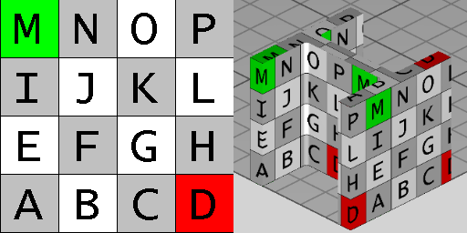

8.8.3.12 IfcExtrudedAreaSolid
| Festkörper - aus extrudierter Fläche |
The IfcExtrudedAreaSolid is defined by sweeping a cross section provided by a profile definition. The
direction of the extrusion is given by the ExtrudedDirection attribute and the length of the extrusion is
given by the Depth attribute. If the planar area has inner boundaries (holes defined), then those holes shall
be swept into holes of the solid.
The resulting solid is positioned by the IfcSweptAreaSolid.Position relative to the object coordinate system. If provided, it allows to reposition the extruded solid. If not provided, it defaults to the current object coordinate system. The ExtrudedDirection is given within the position coordinate system as defined by IfcSweptAreaSolid.Position. The extruded direction can be any direction which is not perpendicular to the z axis of the position coordinate system.
 |
EXAMPLE Figure 287 illustrates geometric parameters of the extruded area solid. The extruded area solid defines the
extrusion of a 2D area by an direction and depth. The result is a solid.
- The profile to be swept is defined:
- as a 2D primitive, here IfcRectangleProfileDef, that is placed relative to the xy plane of object coordinate system
- since no 2D profile position coordinate system is provided, here IfcParameterizedProfileDef.Position = NIL, the profile is positioned without transformation into the xy plane of the object coordinate system (by default, centric at 0.,0. with no rotation)
- The resulting swept solid is not repositioned, as no position coordinate system is provided, here IfcSweptAreaSolid.Position = NIL.
|
|
Figure 287 — Extruded area solid geometry
|
|
 |
EXAMPLE Figure 288 illustrates geometric parameters and additional positioning parameters of the extruded area solid. The extruded area solid defines the extrusion of a 2D area by an direction and depth. The 2D area, provided by a parameterized profile definition, can be positioned relative to the object coordinate system (other then by default at 0.,0. with no rotation). The result is a solid that can be repositioned within the object coordinate system.
- The profile to be swept is defined:
- as a 2D primitive, here IfcRectangleProfileDef, that is placed relative to the xy plane of object coordinate system
- a 2D profile position coordinate system is provided that positions the profile relative to the xy plane (here at a corner of the rectangle)
- The resulting swept solid is repositioned, here it is moved into local z and rotated by 15' along the y axis.
|
|
Figure 288 — Repositioned extruded area solid geometry
|
|
NOTE Definition according to ISO/CD 10303-42:1992
An extruded area solid is a solid defined by sweeping a bounded planar surface. The direction of translation is defined
by a direction vector, and the length of the translation is defined by a distance depth. The planar area may have holes
which will sweep into holes in the solid.
NOTE Entity adapted from extruded_area_solid defined in ISO
10303-42.
HISTORY New entity in IFC1.5
Texture use definition
For side faces, textures are aligned facing upright continuously along the sides with origin at the first point of
an arbitrary profile, and following the outer bound of the profile counter-clockwise (as seen from above). For
parameterized profiles, the origin is defined at the +Y extent for rounded profiles (having no sharp edge) and the
first sharp edge counter-clockwise from the +Y extent for all other profiles. Textures are stretched or repeated on
each side along the outer boundary of the profile according to RepeatS. Textures are stretched or repeated on
each side along the extrusion axis according to RepeatT.
For top and bottom caps, textures are aligned facing front-to-back, with the origin at the minimum X and Y extent.
Textures are stretched or repeated on the top and bottom to the extent of each face according to RepeatS and
RepeatT.
For profiles with voids, textures are aligned facing upright along the inner side with origin at the first point of
an arbitrary profile, and following the inner bound of the profile clockwise (as seen from above). For parameterized
profiles, the origin of inner sides is defined at the +Y extent for rounded profiles (having no sharp edge such as
hollow ellipses or rounded rectangles) and the first sharp edge clockwise from the +Y extent for all other
profiles.
|

|
EXAMPLE Figure 289 illustrates default texture mapping with a repeated texture (RepeatS=True and RepeatT=True).
The image on the left shows the texture where the S axis points to the right and the T axis points up. The image on the right shows
the texture applied to the geometry where the X axis points back to the right, the Y axis points back to the left, and
the Z axis points up. For an IfcExtrudedAreaSolid having a profile of IfcIShapeProfileDef, the side
texture coordinate origin is the first corner counter-clockwise from the +Y axis, which equals
(-0.5*IfcIShapeProfileDef.OverallWidth, +0.5*IfcIShapeProfileDef.OverallDepth),
while the top (end cap) texture
coordinates start at
(-0.5*IfcIShapeProfileDef.OverallWidth, -0.5*IfcIShapeProfileDef.OverallDepth).
|
|
Figure 289 — Extruded area solid textures
|
|
XSD Specification:
<xs:element name="IfcExtrudedAreaSolid" type="ifc:IfcExtrudedAreaSolid" substitutionGroup="ifc:IfcSweptAreaSolid" nillable="true"/>
<xs:complexType name="IfcExtrudedAreaSolid">
<xs:complexContent>
<xs:extension base="ifc:IfcSweptAreaSolid">
<xs:sequence>
<xs:element name="ExtrudedDirection" type="ifc:IfcDirection" nillable="true"/>
</xs:sequence>
<xs:attribute name="Depth" type="ifc:IfcPositiveLengthMeasure" use="optional"/>
</xs:extension>
</xs:complexContent>
</xs:complexType>
EXPRESS Specification:
|
ENTITY IfcExtrudedAreaSolid
|
|
|
| ValidExtrusionDirection | : | IfcDotProduct(IfcRepresentationItem() || IfcGeometricRepresentationItem() || IfcDirection([0.0,0.0,1.0]), SELF.ExtrudedDirection) <> 0.0; |
|
 EXPRESS-G diagram
EXPRESS-G diagram
Attribute Definitions:
| ExtrudedDirection | : |
The direction in which the surface, provided by SweptArea is to be swept.
|
| Depth | : |
The distance the surface is to be swept along the ExtrudedDirection
|
Formal Propositions:
| ValidExtrusionDirection | : |
The ExtrudedDirection shall not be perpendicular to the local z-axis.
|
Inheritance Graph:
|
ENTITY IfcExtrudedAreaSolid
|
Examples:
 Link to this page
Link to this page